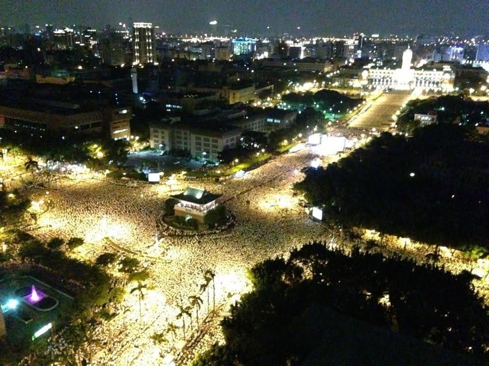
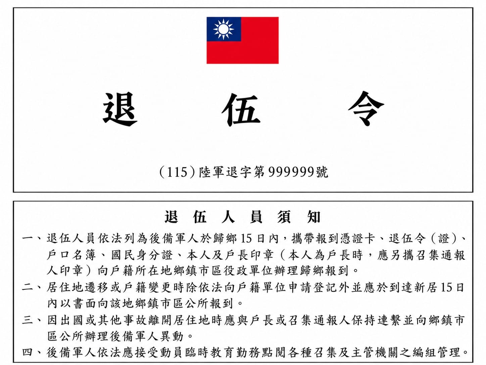

《在現場的人》採訪計畫
白衫之後：
重訪洪仲丘案與軍中改革未竟之路
一場死亡，如何讓萬千人走上凱達格蘭大道，又如何影響台灣的兵役環境與制度？
2013年，洪仲丘案爆發，催生「萬人送仲丘」等大規模公民運動。有人說，這起事件撕開了「萬惡的國防布」；也有人說，它終於讓陽光照進軍營。
十三年後，我們試著重新回到洪仲丘案的「現場」：從採訪現場走進編輯室，從軍方辦公室走向研究室，重構真相如何一步步被追索，新聞又如何穿透封閉的軍事體系；也沿著洪案留下的裂縫繼續往前，檢視軍中人權、軍審改革與兵源制度中，那些延續至今、仍未完成的課題。
「穿上軍服之後，一個人仍然是享有基本權利的公民。」延續白衫軍當年的關懷，我們欲進一步追問：當年照進軍營的那束光，究竟留下了什麼？白衫散去後，究竟又改變了多少？
本專題共五篇報導
專題製作《白衫之後：重訪洪仲丘案與軍中改革未竟之路》團隊
文字羅澤、黃律齊
設計羅澤、黃律齊
網頁製作黃律齊
指導老師鄭宇君教授
最後更新2026.09.30
往下捲動 ↓
未上鎖
--/-- --:--:--
◈ 國軍營內民用通信 ◈
資訊器材管制標籤

全篇完